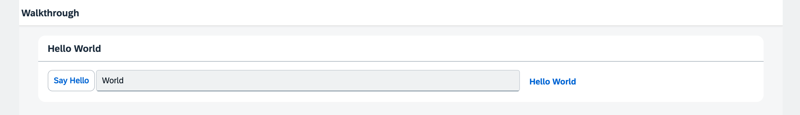

You can view all files at OpenUI5 TypeScript Walkthrough - Step 15: Nested Views and download the solution as a zip file.
In our webapp/controller folder we create a new HelloPanel.controller.ts file and move the
onShowHello method from the app controller to it, so we get a reusable asset.
import Controller from "sap/ui/core/mvc/Controller";
import MessageToast from "sap/m/MessageToast";
import JSONModel from "sap/ui/model/json/JSONModel";
import ResourceModel from "sap/ui/model/resource/ResourceModel";
import ResourceBundle from "sap/base/i18n/ResourceBundle";
/**
* @namespace ui5.walkthrough.controller
*/
export default class HelloPanel extends Controller {
onShowHello(): void {
// read msg from i18n model
// functions with generic return values require casting
const resourceBundle = (this.getView()?.getModel("i18n") as ResourceModel)?.getResourceBundle() as ResourceBundle;
const recipient = (this.getView()?.getModel() as JSONModel)?.getProperty("/recipient/name");
const msg = resourceBundle.getText("helloMsg", [recipient]) || "no text defined";
// show message
MessageToast.show(msg);
}
};We create a new HelloPanel.view.xml file in our webapp/view folder and move the whole panel from the app
view to it. We also reference the controller we just created for the view by setting it to the controllerName attribute
of the XML view.
<mvc:View
controllerName="ui5.walkthrough.controller.HelloPanel"
xmlns="sap.m"
xmlns:mvc="sap.ui.core.mvc">
<Panel
headerText="{i18n>helloPanelTitle}"
class="sapUiResponsiveMargin"
width="auto">
<content>
<Button
text="{i18n>showHelloButtonText}"
press=".onShowHello"
class="myCustomButton"/>
<Input
value="{/recipient/name}"
valueLiveUpdate="true"
width="60%"/>
<FormattedText
htmlText="Hello {/recipient/name}"
class="sapUiSmallMargin sapThemeHighlight-asColor myCustomText"/>
</content>
</Panel>
</mvc:View>In the app view, we remove the panel control and its content and put the XMLView control into the content of the page
instead. We add the viewName attribute with the value ui5.walkthrough.view.HelloPanel to reference the
new view that now contains the panel.
<mvc:View
controllerName="ui5.walkthrough.controller.App"
xmlns="sap.m"
xmlns:mvc="sap.ui.core.mvc"
displayBlock="true">
<Shell>
<App class="myAppDemoWT">
<pages>
<Page title="{i18n>homePageTitle}">
<content>
<mvc:XMLView viewName="ui5.walkthrough.view.HelloPanel"/>
</content>
</Page>
</pages>
</App>
</Shell>
</mvc:View>We remove the onShowHello method from the app controller, as this is not needed anymore.
import Controller from "sap/ui/core/mvc/Controller";
/**
* @namespace ui5.walkthrough.controller
*/
export default class App extends Controller {
};We have now moved everything out of the app view and controller. The app controller remains an empty stub for now, we will use it later to add more functionality.